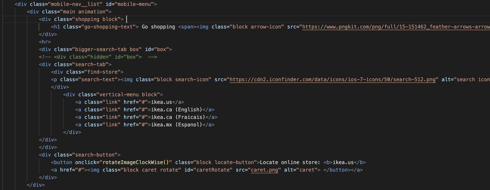
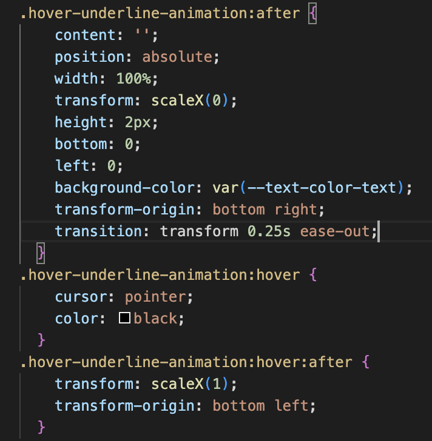

IDM-241-002 - FA 22-23
This is the final project for the IDM241 Microinteraction class. For this project, I was assigned to analyze and code a set of at minimum 5 micro-interactions. The project aims to teach us effectively using coding knowledge from all coding languages (HTML, CSS, Javascript, etc.) we've already learned throughout the IDM coursework to recreate a sample of micro-interaction we see in real-life websites.
For this project, I challenged myself with micro-interactions from the IKEA website. It's a challenge of mine as a designer who recently dabbled into coding to build this project from scratch.
My goal for this exercise is to completely and effectively recreate this set of micro-interaction where users can seamlessly interact with it.
I started by researching a set of micro-interaction that fit the scope of this assignment. I chose the IKEA website, specifically its hamburger menu button micro-interaction.
There are 6 micro-interactions in my set of micro-interactions. They all consist of hovering over and off or clicking a button. After viewing these micro-interactions, I wrote down an analysis of their Triggers, Rules, Feedback, Loops, and Modes.
Next, I continue by setting up an HTML file of the micro-interaction. I write down all its content in this file and put all these elements in their correct syntax. Using CSS, I style these elements into a visual interface close to how it is on the IKEA website.
This micro-interaction with the Hamburger menu heavily focuses on the click-on interaction. As the user clicks on the Hamburger menu, a menu slides from right to left, revealing more content. To create this animation, I need to use an HTML id to specify which tag I'm targeting, then link these ids into a variable to manipulate in Javascript freely.
HTML of Microinteraction 1
HTML of Microinteraction 2
To animate a slide in and out for this Hamburger menu, I used CSS @keyframes to create an animation sequence.
Javascript of Micro-interaction 1 and 2
Microinteraction 3 can also be done in CSS with the :hover selector. In microinteraction 4, there are two things happening when a user clicks onto the button. When clicked, the button will trigger to reveal a vertical scrollbar and trigger its caret to rotate 180 degrees.
In order to create an onclick button and reveal the content box animation, I first create id for two elements, the box and the button.
Then to control the display on or off of the box, I'll use CSS to clarify its state.
Using Javascript, I first pull all the elements needed for this interaction by the getElementById() method, then link them to a variable using const. Then I create a condition nested click function that triggers an action whenever the button is clicked. In this case, when no content is revealed, the content will appear if the button is triggered. And vice versa, when there's content, if the button is triggered, content will disappear.
The same principle applies to rotating the caret when a button is clicked. I'll create a unique id for both the button and the caret. In this micro-interaction, I will use the onclick event tag in HTML to link this button to a Javascript function called rotateImageClockWise().
In the Javascript file, I'll create a function rotateImageClockWise() where I use the getElementById() method to link the caret to a variable using var. Then, to easily rotate this caret 180 degrees, I'll use a DOM style property to turn the icon.
Microinteraction 5 is easily done in CSS with the :hover selector with transform tag and translateX value for moving animation of the arrow icon along the X axis.
Microinteraction 6 is a hover and underline animation with transition on the underline. When a cursor hovers over a text, the cursor changes into a pointer and a black underline is drawn from left to right. When the cursor hovers off, the underline runs from left to right until disappearing. This animation is achieved using CSS :hover selector and :after pseudo-element.
 This is the outcome of my project.
https://cindyqquach.com/idm241/final/build/
After multiple iterations and debugging sessions with the professor, I finally came to the final product. The set of micro-interaction sufficiently carries out all the intended functions and animations.
As the code functions well, this outcome suffices my vision of this project. My takeaway is the importance of seeking help whenever I'm stuck, whether from the professor or online coding platforms. These two outlets play a big part in helping me finish this project. Over three weeks, I've created these 6 micro-interactions from scratch. My goal is met. As we advance, a responsive 'Go shopping' tab and closed tab onload are two improvements that can be done to this project.